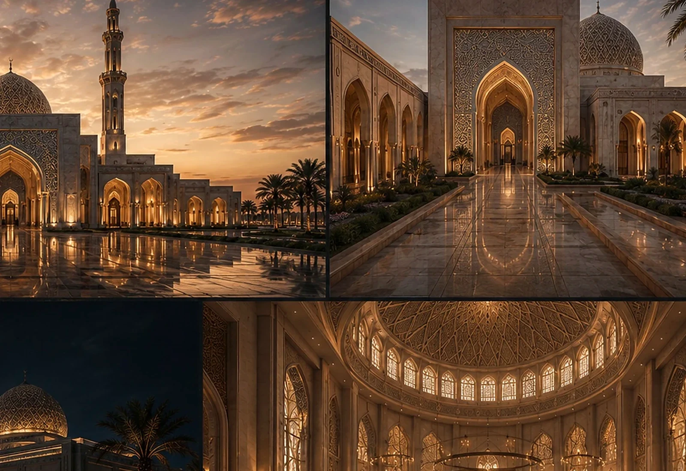
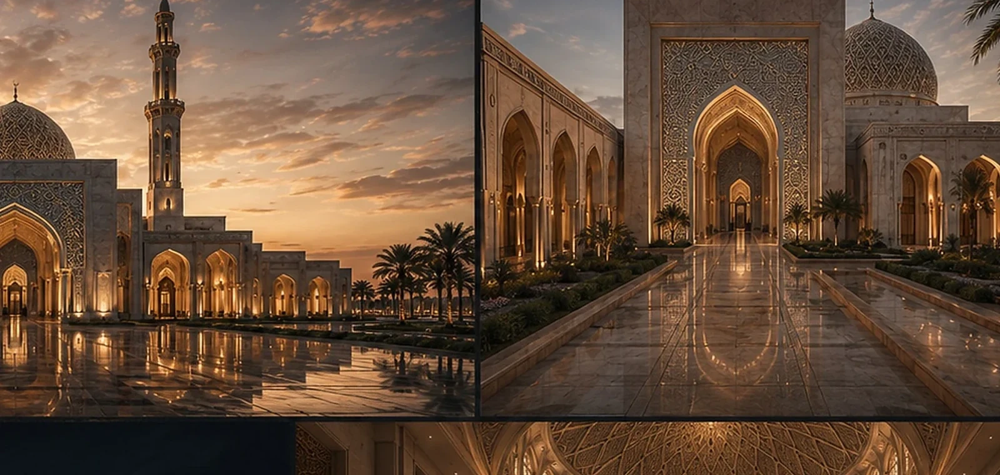
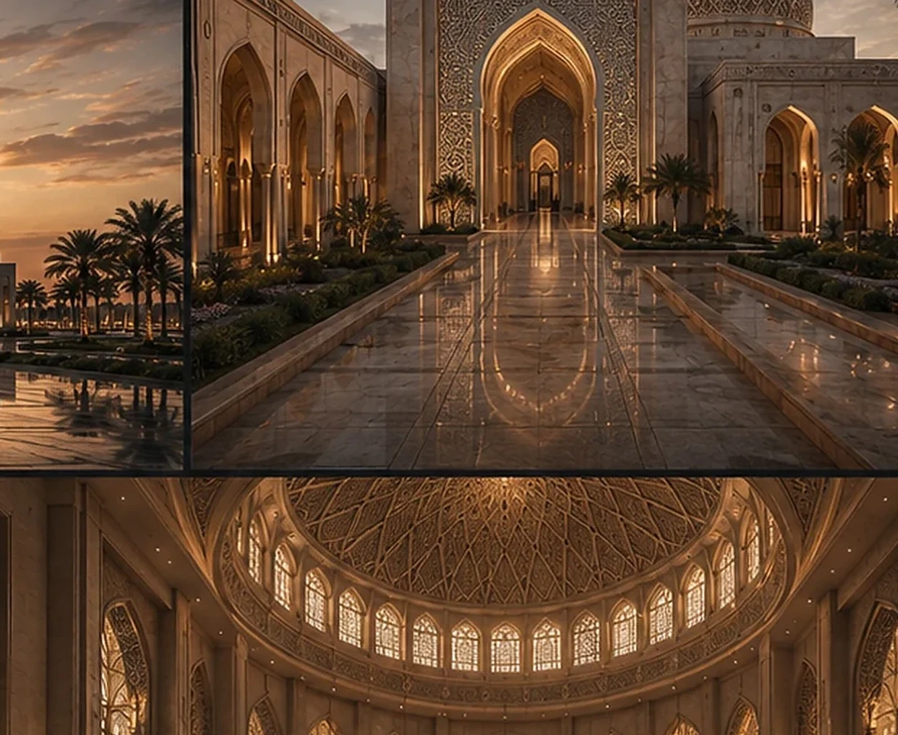
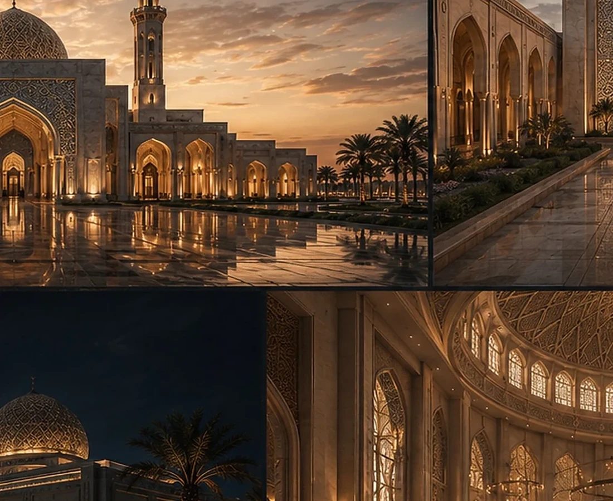

A Civic Landmark Built Around Arrival, Threshold and Spiritual Presence.
The concept uses layered courtyards, monumental arches and a strong silhouette to move from city scale toward a more contemplative interior experience.
LocationRiyadh, Saudi ArabiaYear2016TypologyReligious / Mosque

A CASE OF THINKING
READ THE PROJECT AS A SEQUENCE OF DEVELOPMENT DECISIONS.
The fields below form BADR's standard case-study lens. Project-specific commercial claims should be replaced only when they are supported by the project record.
THE DEVELOPMENT QUESTION
How can a religious building become both a civic marker and a calm sequence of spiritual spaces?
THE GOVERNING IDEA
Build identity through procession: arrival, threshold, courtyard, prayer and skyline.
THE DESIGN RESPONSE
Symmetry, warm stone, layered boundaries and monumental openings organise the experience from public to contemplative.
THE SIGNATURE
A recognisable silhouette and ceremonial arrival sequence.
WHY IT MATTERS
The project’s value lies in creating identity at both the city scale and the human scale, without relying on form alone.
Design Direction
A project identity shaped by place, typology and experience.
The architecture uses symmetry, warm stone and layered thresholds to create a sequence from city scale to a more contemplative interior atmosphere.
Project narrative is based on the supplied BADR portfolio record and visible design material.



Design → BIM
The architectural idea continues into coordinated digital delivery.
The supplied BIM portfolio includes this project family.
A New Development Opportunity
Your Site Deserves a Development Strategy Before It Becomes a Drawing Package.